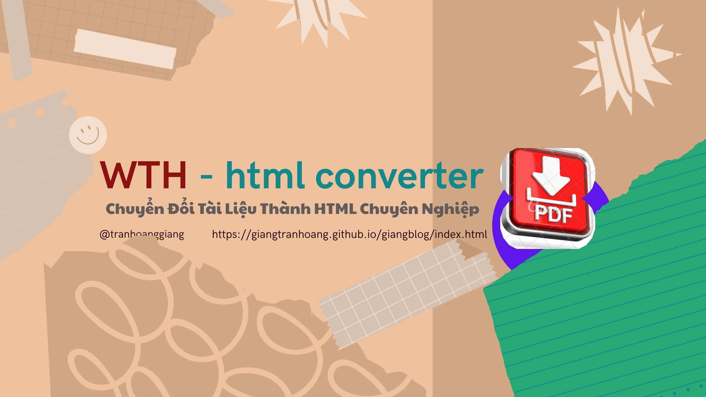

Phần Mềm WTH (Word to HTML)
Giới thiệu Phần Mềm WTH (Word to HTML)
Đăng ngày 16 tháng 9, 2024, bởi tác giả
Tải về ứng dụng WTH
Bạn có thể tải về ứng dụng WTH (Word to HTML) ( Hãy kéo xuống cuối bài viết để tải phần mềm/pw123456).
HƯỚNG DẪN TẢI VỀ/ CÀI ĐẶT VÀ SỬ DỤNG PHẦN MỀM WTH
Giới thiệu ứng dụng WTH qua Video
Xem video trên để tìm hiểu thêm về cách ứng dụng WTH hoạt động và các tính năng hữu ích của nó.
1. Giới thiệu về phần mềm WTH
WTH (viết tắt của Word to HTML) là một ứng dụng gọn nhẹ, mạnh mẽ được thiết kế để giúp bạn chuyển file pdf sang word + chuyển đổi tài liệu văn bản thành mã HTML sạch một cách nhanh chóng và hiệu quả.
• Phần mềm: Ứng dụng Chuyển đổi Văn bản sang HTML, và chuyển file pdf sang word.
• Phiên bản: 1.0 - tháng 09/2025.
• Tác giả: Trần Hoàng Giang.
• Mục đích: Chuyển đổi tài liệu (.doc, .docx, .pdf) và văn bản thô sang mã HTML sạch để bạn dễ dàng đăng bài lên web, đồng thời hỗ trợ chuyển file pdf sang word.
Ứng dụng này được tạo ra để giúp công việc của bạn trở nên hiệu quả hơn.
2. Tải về và Cài đặt
Ứng dụng WTH là một file thực thi duy nhất (.exe) và không yêu cầu cài đặt.
1. Tải file: Tải file WTH.zip từ cuối trang web này.
2. Giải nén: Sử dụng phần mềm nén (như WinRAR, 7-Zip) để giải nén file WTH.zip vào một thư mục bất kỳ trên máy tính của bạn.
3. Sử dụng: Sau khi giải nén, bạn sẽ thấy file WTH.exe. Chỉ cần nhấp đúp vào file này để khởi động ứng dụng.
Lưu ý: Vì đây là một ứng dụng được đóng gói tùy chỉnh, hệ thống bảo mật của Windows Defender hoặc các phần mềm diệt virus có thể hiện cảnh báo. Bạn có thể bỏ qua cảnh báo này và cho phép ứng dụng chạy vì nó hoàn toàn an toàn.
3. Hướng dẫn sử dụng
Giao diện chính của ứng dụng gồm hai phần:
• Khung bên trái: Dùng để dán văn bản trực tiếp hoặc hiển thị nội dung từ file bạn chọn.
• Khung bên phải: Hiển thị mã HTML đã được chuyển đổi.
Các chức năng trong menu:
• Menu File:
o Chuyển File (sang HTML): Mở hộp thoại để bạn chọn file .docx hoặc .pdf. Nội dung sẽ được chuyển đổi và hiển thị ở khung bên phải.
o Chuyển PDF sang Word: Mở hộp thoại để bạn chọn file .pdf và chuyển đổi nó thành file .docx.
o Tạo Mới: Xóa toàn bộ nội dung trong cả hai khung để bắt đầu một dự án mới.
o Thoát: Đóng ứng dụng.
• Menu Chức năng:
o Chuyển đổi văn bản sang HTML: Chuyển đổi văn bản bạn đã dán vào khung bên trái thành mã HTML.
o Sao chép HTML: Sao chép toàn bộ nội dung trong khung HTML vào clipboard.
• Menu Giới thiệu:
o Về Tác giả: Hiển thị thông tin về phần mềm và tác giả.
Chúc bạn sử dụng ứng dụng hiệu quả!
Mọi góp ý/ phát triển/Psw... xin liên hệ :
tranhoanggiang@gmail.com
link Tải về WTH.zip